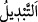
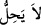
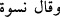
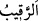

“__WORD__ ise karşılığı gelmese bile değiştirmek demektir.”
Yâni bu dokuz hanımın hepsini veya birisini boşayıp onun yerine başka birini
nikahlamak sûretiyle onları başka eşlerle değiştirmen sana helal değildir.
Bu hanımlar, dünyâyı ve dünyâ ziynetini değil de Rasûlullah (s.a.)’i ve âhiret yurdunu
tercih ettikleri, O’nun muradına razı oldukları için Allah Teâlâ onlara bir üstünlük ve
karşılık vermeyi murâd etti. Rasûlü’nü onlara tahsis etti. Onları boşamasını ve başka
hanımlarla değiştirmesini yasakladı.
“Sana helâl değildir.”
“__WORD__ müzekkerdir. Çünkü cemînin müennesliği hakîkî değildir ve fiil ile fâilin
arasına başka bir lafız girmiştir. “__WORD__ âyetinde araya başka bir lafız girmeden fiilin
müzekker olması câiz olduğuna göre, girdiğinde fazlasıyla câiz olur.
Mücâhid şöyle demiştir: “Bu âyetin mânâsı şöyledir: Müslüman hanımlardan sonra
senin yahûdi ve hristiyan kadınlarla evlenmen veya müslüman hanımları yahudi ve
hristiyan kadınlarla değiştirmen helal olmaz. Yahudi veya hristiyan bir kadın
mü’minlerin annesi olamaz. Ancak elinin altında bulunan/sahip olduğun câriye bundan
müstesnâdır. Rasûlullah (s.a.) câriye olarak alırsa ehl-i kitaptan olan kadınları O’na
helal kılmıştır.”
“Allah her şeyi gözetler”
“__WORD__, hâfız, koruyan, gözetleyen demektir. Bu gözetleme, ya korunan bir şeyi görüp
gözetmek ya da onun gözetlenmesinin öneminden dolayı yapılır. “__WORD__ gaflet etmeyen,
dalgınlığa düşmeyen ve kendisi hakkında böyle bir şey asla caiz olmayandır. Böyle
olunca da O hiçbir hatırlatıcı ve uyarıcıya ihtiyaç duymaz. Nitekim Zerrûkî’nin
Şerhu’l-Esmâ’sında böyle geçmektedir.
Yâni Allah Teâlâ sizi her şeyi koruyan/kaydeden, görüp gözetendir. Öyleyse siz de
O’nun emirlerini koruyup gözetin. Sizin için belirlediği sınırları aşmayın.
Bu âyet-i kerîmede önemli bazı hususlar vardır:
1- Cumhûra göre bu âyet muhkemdir ve Rasûlullah (s.a.) vefat edinceye kadar mevcut
hanımları dışında başka kadınlarla evlenmesi haram ve yasak kılınmıştır.
2- Allah Teâlâ Hz. Peygamber (s.a.)’e nikah ve evlenme konusunu geniş tutunca,
O’nun mübârek nefsi mizacında değişmeyi gerektirecek şekilde kendi içeceği yerlerden
içmekle nasiplendirildi. Tıpkı tatlı, sıcak ve safrâvî bir yemek yiyen bir kimsenin
sağlığını korumak için bu safrayı gideren ekşi (asitli) soğuk bir gıdaya ihtiyaç duyduğu
gibi, Allah Teâlâ Habîbi (s.a.) hakkında inâyetinin kemâlinden kalbî ve nefsî mizâcının
mutedil olması için O’nu “Bundan sonra artık başka kadınlarla evlenmen … sana
helâl değildir”ekşisi (asidi) ile besledi. Bu Hz. Peygamber (s.a.)’in mübârek nefsini
terbiye kabilindendir.
3- Allah Teâlâ’nın Hz. Peygamber (s.a.)’e evlilik dâiresini genişletip O’na bir çok
kadınla evlenmeyi helal kılmasına, dilediğini geriye bırakıp dilediğini de yanına almak
konusunda muhayyer bırakmasına sabır hususunda ezvâc-ı mutahharada darlanma